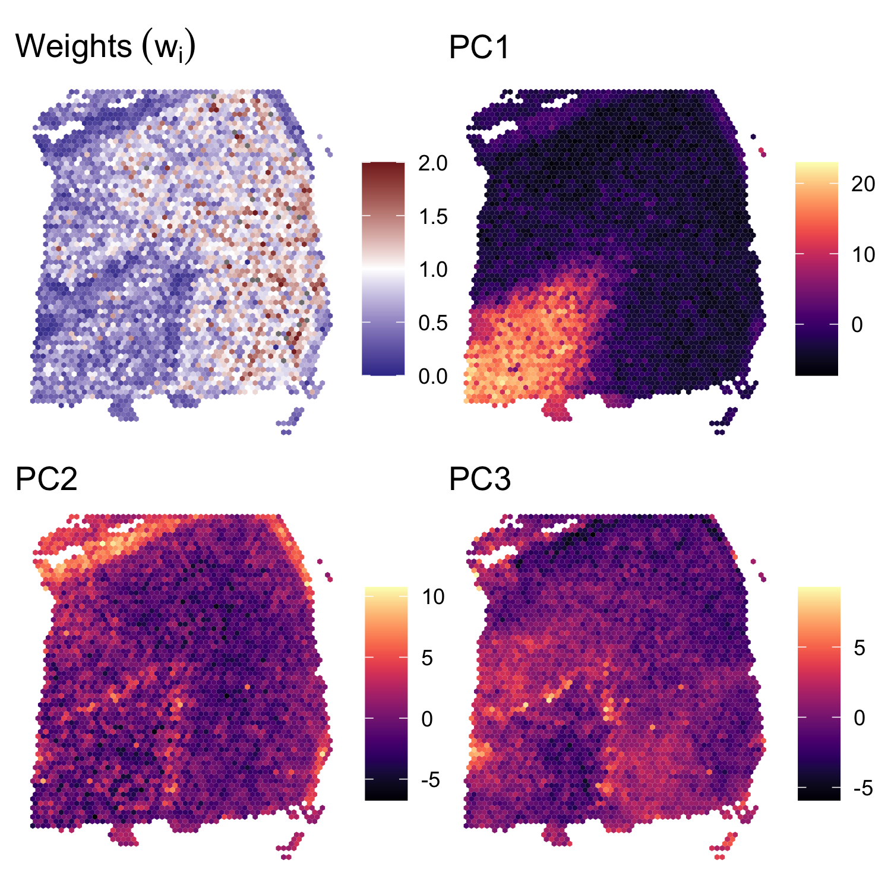

BayesSpace analysis of DLPFC dataset (Maynard et al., 2020)
Edward Zhao, Matt Stone, Xing Ren, and Raphael Gottardo
Source:vignettes/maynard_DLPFC.Rmd
maynard_DLPFC.RmdOverview
Here we present our re-analysis of one of the dorsolateral prefrontal cortex (DLPFC) samples originally reported by Maynard et al. (2020). These data were obtained through the publicly accessible spatialLIBD package on Bioconductor.
In the BayesSpace manuscript, we analyzed all twelve Visium samples provided by Maynard et al. Here, we share the results for a single sample, 151673; we used the same code to analyze the other 11.
Processing the data
A cleaned SingleCellExperiment object containing the dataset (after removing data specific to the spatialLIBD analyses) is available through BayesSpace. We preprocessed the data by performing PCA on the top 2,000 HVGs.
dlpfc <- getRDS("2020_maynard_prefrontal-cortex", "151673")
set.seed(101)
dec <- scran::modelGeneVar(dlpfc)
top <- scran::getTopHVGs(dec, n = 2000)
set.seed(102)
dlpfc <- scater::runPCA(dlpfc, subset_row=top)
## Add BayesSpace metadata
dlpfc <- spatialPreprocess(dlpfc, platform="Visium", skip.PCA=TRUE)Clustering with BayesSpace
We clustered the first 15 principal components, specifying 7 clusters to match the six brain layers plus one white matter region, and ran the MCMC algorithm for 50,000 iterations. We set our smoothing parameter gamma to 3, which we generally suggest for Visium datasets.
q <- 7 # Number of clusters
d <- 15 # Number of PCs
## Run BayesSpace clustering
set.seed(104)
dlpfc <- spatialCluster(dlpfc, q=q, d=d, platform='Visium',
nrep=50000, gamma=3, save.chain=TRUE)
## We recoded the cluster labels to match the expected brain layers
labels <- dplyr::recode(dlpfc$spatial.cluster, 3, 4, 5, 6, 2, 7, 1)
## View results
clusterPlot(dlpfc, label=labels, palette=NULL, size=0.05) +
scale_fill_viridis_d(option = "A", labels = 1:7) +
labs(title="BayesSpace")
Other clustering algorithms
BayesSpace - normal error model
We ran several clustering algorithms on each sample to evaluate relative performance. First, we ran the BayesSpace clustering algorithm using the normal error model in order to demonstrate the t-distributed error model’s improved handling of outlier spots.
clusters <- list()
clusters[["BayesSpace (t-distributed error)"]] <- dlpfc$spatial.cluster
set.seed(104)
dlpfc.normal <- spatialCluster(dlpfc, q=q, d=d, platform='Visium',
nrep=50000, gamma=3, model="normal")
clusters[["BayesSpace (normal error)"]] <- dlpfc.normal$spatial.clusterNon-spatial clustering algorithms
Next, we ran several popular non-spatial clustering algorithms that are typically used in scRNA-seq analysis - k-means, Louvain, and mclust. For each of these algorithms, we clustered the first 15 principal components of the log-normalized expression matrix, specifying 7 clusters when possible. The Louvain algorithm was run on the k=10 shared nearest neighbor graph (weighted using Jaccard similarity). The mclust algorithm was run using the EEE multivariate mixture model.
Y <- reducedDim(dlpfc, "PCA")[, seq_len(d)]
## K-means
set.seed(103)
clusters[["k-means"]] <- kmeans(Y, centers = q)$cluster
## Louvain
set.seed(100)
g.jaccard = scran::buildSNNGraph(dlpfc, use.dimred="PCA", type="jaccard")
clusters[["Louvain"]] <- igraph::cluster_louvain(g.jaccard)$membership
## mclust (BayesSpace initialization)
set.seed(104)
library(mclust)
clusters[["mclust"]] <- Mclust(Y, G = 7, modelNames = "EEE")$classificationSpatial clustering algorithms
We also ran two recently published spatial clustering algorithms, stLearn and Giotto (HMRF). To analyze these samples we adapted the respective tutorials (stLearn, Giotto) and provide this code separately. For ease of reproduction, we include the obtained cluster labels directly with this package.
clusters[["stLearn (HVGs)"]] <- read.csv(system.file("extdata", "2020_maynard_prefrontal-cortex", "151673.stLearn_HVGs.csv", package = "BayesSpace"))$pca_kmeans + 1
clusters[["stLearn (markers)"]] <- read.csv(system.file("extdata", "2020_maynard_prefrontal-cortex", "151673.stLearn_markers.csv", package = "BayesSpace"))$pca_kmeans + 1
clusters[["Giotto"]] <- read.csv(system.file("extdata", "2020_maynard_prefrontal-cortex", "151673.Giotto_HMRF.csv", package = "BayesSpace"))$HMRF_km_Delaunay_k7_b.9spatialLIBD cluster assignments
Finally, to evaluate each algorithm’s cluster assignments, we use the manual annotations provided with the original data by Maynard et al. We also compare the cluster assignments reported in this paper using the Walktrap clustering algorithm (a non-spatial hierarchical clustering algorithm.)
## Fetch original SCE with cluster labels
sce <- spatialLIBD::fetch_data(type="sce")
#> Loading objects:
#> sce
sce <- sce[, sce$sample_name == "151673"]
## Walktrap and ground truth (manual annotations)
clusters[["Walktrap (HVGs)"]] <- sce$HVG_PCA_spatial
clusters[["Walktrap (markers)"]] <- sce$markers_PCA_spatial
clusters[["Manual annotation"]] <- sce$layer_guess_reorderedSummary of clustering assignments
Here, we visualize the clustering of sample 151673 obtained using each algorithm. In the left column we show the ground truth (manual annotations) and the Walktrap clustering reported in the original study; in the second, we show the non-spatial algorithms; in the third, the spatial algorithms we compared to; and in the final column, we show the clustering identified by BayesSpace using the t-distributed and normal error models. Note that the t-distributed model resolves several of the outlier spots present when using the normal model.

Finally, we used the adjusted Rand index to evaluate the performance of each algorithm with respect to the ground truth labels. In the manuscript we present the range of ARIs obtained over all twelve samples.
ARI <- purrr::map(clusters, function(x) mclust::adjustedRandIndex(x, clusters[["Manual annotation"]]))
Spot weights and principal components
In Supplementary Figure S1, we also show the spatial distribution of the weights \(w_i\), along with the spatial distribution of the first three principal components. We note that some of the visible outlier spots in the second and third principal components are downweighted by the BayesSpace clustering algorithm (low \(w_i\)).
## Load the cached MCMC chain
chain <- mcmcChain(dlpfc)
## Average spot weights after excluding 1,000 burn-in iterations
burn.in <- 100
weights <- chain[, grep("weights", colnames(chain))]
weights <- apply(weights[-(1:burn.in),], 2, mean)
## Plot the weights
weights.plot <- featurePlot(dlpfc, weights, color=NA) +
labs(fill=NULL, title=expression(Weights~(w[i]))) +
scale_fill_gradient2(midpoint=1, low=scales::muted("blue"), high=scales::muted("red"),
breaks=c(0, 0.5, 1, 1.5, 2), limits=c(0, 2))
## Plot the principal components
plot_PC <- function(comp) {
featurePlot(dlpfc, reducedDim(dlpfc, "PCA")[, comp], color=NA) +
viridis::scale_fill_viridis(option="A") +
labs(fill=NULL, title=sprintf("PC%d", comp))
}
components <- c(1, 2, 3)
PC_plots <- purrr::map(components, plot_PC)
patchwork::wrap_plots(c(list(weights.plot), PC_plots))